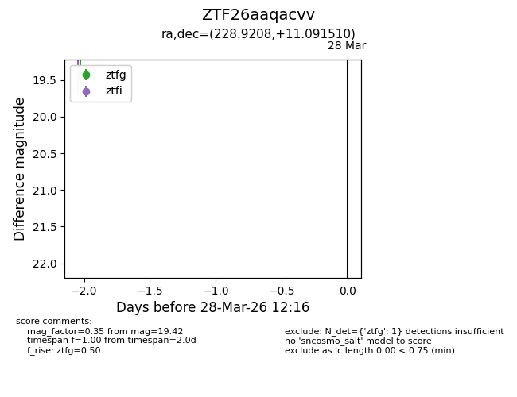
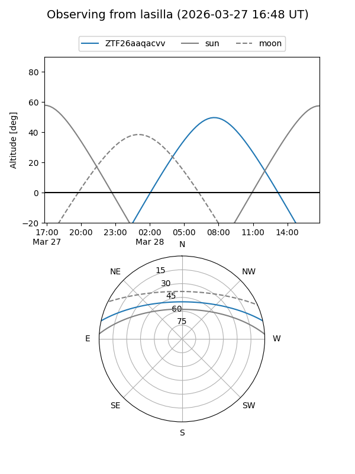
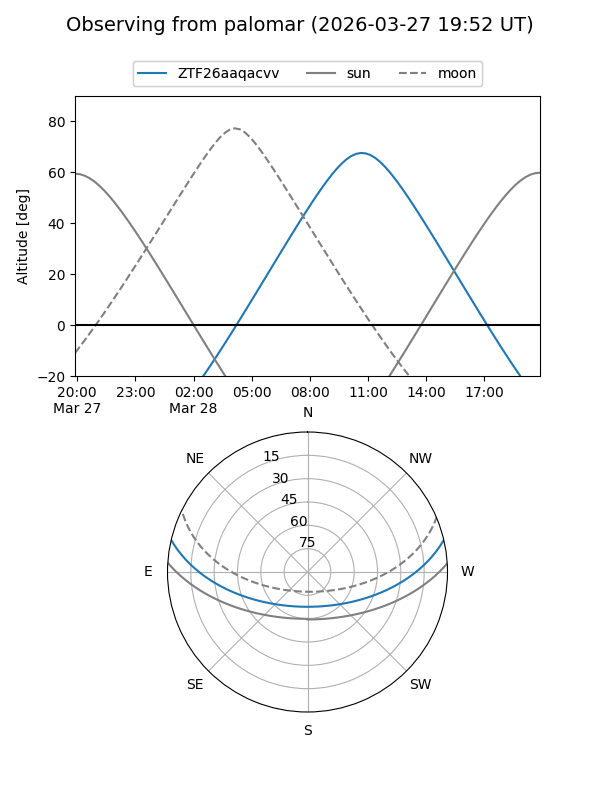

ZTF26aaqacvv
Target ZTF26aaqacvv at 2026-03-28 12:20
Aliases and brokers:
FINK: link
Lasair: link
ALeRCE: link
alt names
ZTF26aaqacvv (ztf,fink_ztf)
Coordinates:
equatorial (ra, dec) = 228.9208,+11.09151
equatorial (HMS+DMS) = 15:15:41.00,+11:05:29.44
galactic (l, b) = (14.6792,+52.53611)
Flags:
Photometry:
last ztfg=19.42
1 ztfg detections
Lightcurve

Visibility


Additional plots